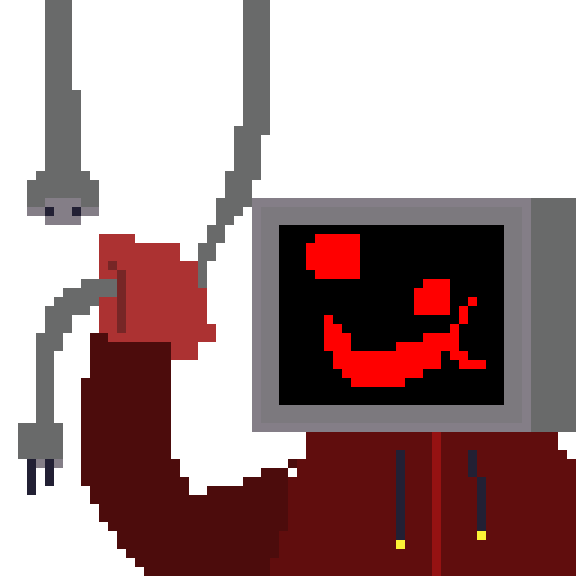

[ERROR 404] Página no encontrada.
> Buscando recurso...
> Buscando nuevamente...
> Preguntándole al servidor...
[WARNING] El servidor no sabe dónde está.
> Ejecutando protocolo de recuperación...
[ERROR] Protocolo de recuperación tampoco sabe dónde está.
> Comprobando si el desarrollador lo borró accidentalmente...
[CRITICAL] El desarrollador no recuerda.
> Diagnóstico final: esta página decidió dejar de existir.
[INFO] No hay nada que hacer. Probablemente.
> Recomendación: volver al inicio y fingir que esto nunca ocurrió.
